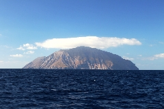
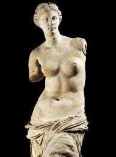

>> CYKLADY 2012 <<
>> CYKLADY 2012 <<
W koñcu wrzesnia 2012 kolejny rejs VIP Yacht Clubu tym razem po Morzu Egejskim z Aten przez Milos, Sifnos, Paros, Siros, Kithnos i powrót do Kalamaki.
W sobotê wieczorem ruszyliœmy z Kalamaki na Milos, nie oby³o siê bez "sprawdzenia" rozk³adu lokalnych mooringów w basenie portowym, ale problem zosta³ szybko pokonany i p³ynêliœmy pó³wiatrem przez
Zatokê Saroñsk¹. Po drodze spotkaliœmy kilka ciekawie oœwietlonych statków, ale wszystko odbywa³o sie w odleg³osciach wiêcej jak bezpieczbych.
Rano powita³o nas piêkne s³oñce i przy ca³kiem mocno wiej¹cej bryzie zmierzaliœmy w stronê Milos, gdzie na prawym trawersie majaczy³a Antimilos.
Niestety w okolicach Adamas s³ynnej Venus z Milos nie by³o, poniewa¿ jest od 1821 na emigracji w Luwrze, ale w lokalnej knajpce obs³ugiwa³a nas Venus pochodz¹ca z Polski.
Okaza³o siê, ¿e Szef knajpki ma dziœ urodziny, wiêc na zakoñczenie imprezy odspiewaliœmy mu Sto lat.
Nastêpnego dnia ruszyliœmy w stronê Sifnos, pocz¹tkowo wiatr by³ ca³kiem niez³y ale popo³udniu ucich³ i do Faros wchodziliœmy na silniku. Zatoka Faros okaza³a siê pamiêtna w skutkach, w szczególnoœci finansowych. Wybór wina by³ perfekcyjny, ale za tym sz³a cena,
a ca³oœci dope³ni³y gambas. Negocjacje by³y d³ugie i czêœciowo owocne, utargowaliœmy ma³y rabat do rachunku i kilka butelek wina, ale zabawa by³a przednia. Od wtorku zapanowa³a niemal ca³kowita flauta, wiêc czêœæ dystansu do
Naoussa na Paros trzeba by³o pokonaæ na silniku.
Po kolacji w Tawernie Glafkos poszliœmy zwiedziæ miasteczko i przyjrzeæ siê knajpkom i tawernom. Na jednej z uliczek zwabi³a nas s¹cz¹ca siê z tawerny grecka muzyka gitarowa. Osiemdziesiêcioletni staruszek
na Paros trzeba by³o pokonaæ na silniku.
Po kolacji w Tawernie Glafkos poszliœmy zwiedziæ miasteczko i przyjrzeæ siê knajpkom i tawernom. Na jednej z uliczek zwabi³a nas s¹cz¹ca siê z tawerny grecka muzyka gitarowa. Osiemdziesiêcioletni staruszek gra³ z niez³¹ werw¹, czasami nostalgiczn¹ muzykê. Zbyszek zrewan¿owa³ siê kilkoma polskimi kawa³kami, no i siê zaczê³o. Po niemal pó³toragodzinnym koncercie i zap³aceniu pó³metrowego rachunku za wino zaczêliœmy szukaæ drogi powrotnej do ³ódki.
gra³ z niez³¹ werw¹, czasami nostalgiczn¹ muzykê. Zbyszek zrewan¿owa³ siê kilkoma polskimi kawa³kami, no i siê zaczê³o. Po niemal pó³toragodzinnym koncercie i zap³aceniu pó³metrowego rachunku za wino zaczêliœmy szukaæ drogi powrotnej do ³ódki.